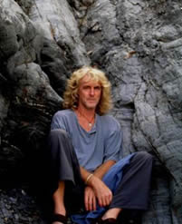
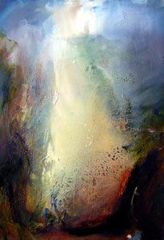

Steve Slimm, contemporary landscape artist
|
|
|
Steve Slimm has been painting and exhibiting work in Cornwall for the past twenty-five years. He has built
a reputation especially for his evocative atmospheric landscapes, always with a touch of mystery. It has been said that his soul shines through each piece. His connection with the land around him is a very unique one, and certainly shows itself in
the paintings we have chosen for this inspirational series of prints and art cards. Recently Steve has worked regularly at specific locations in the Cornwall area that have a special connection to earth energy and the ancient trackways. He has been
painting along some of the most powerful leylines in the world. Leylines, as far as we can be aware, are relatively straight lines of earth energy along which it is thought that our ancient ancestors travelled. These earth energy lines certainly
link up landmarks and sites of antiquity, and have a power which can be felt and gauged by dowsers and people with that kind of sensitivity. What has come to be known as the Michael line, along with its feminine counterpart the Mary line, interweaving
its way next to it, runs across the lower part of Britain, from Land’s End in Cornwall across to the east coast. The lines runs through many ancient sites, churches, stone circles, burial chambers etc. often incorporating ’Michael’
or ’Mary’ within their names. Saint Michael’s Mount is probably the most famous of these, and Steve’s home in Marazion has a magnificent view over this ancient landmark. Other places along the Michael line include the magnificent
stone circle and stone avenues at Avebury in Wiltshire, (which has also become famous for the many beautiful crop circles appearing regularly in the surrounding fields), and the ancient Tor at Glastonbury, in Somerset, (also known for its ancient
spiritual connections).
Steve Slimm - 'Church at Carleen - On the ancient Leyline'
Church at Carleen is one of the many paintings Steve has produced from locations along these leylines. These places are so full of ancient timeless mystery, and somehow connect us to a past, now lost in pre-history, that transcends everything for which modern life has come to be known. But not only this, we are at the same time somehow being plugged into a most powerful earth energy, the potential of which can only be guessed at. As human beings here on planet Earth we are perhaps only just beginning to realise the true nature of our deep connection with the earth itself, and it’s mysterious healing energies. Ley energy is some of the most powerful known that we can connect with. It was how the ancients moved across the earth in virtually straight lines guided only by the felt sense from beneath their feet. To quote from the book ‘The Sun and the Serpent’ by Hamish Miller and Paul Broad Hurst (Pendragon Press, 1989) page 15: ‘the question of meaning arises . . In connection with modern discoveries of aligned sacred sites (‘leys’) throughout the world, of temples orientated astrologically to receive light and energies from certain heavenly bodies, of the mystical science of geomancy and of the cosmological patterns of formulae which sustained ancient civilisations. Revelations abound . . Together they amount to a statement, given directly by nature; a statement that our present way of understanding and treating the earth is wrong, that we inhabit a living planet and must give it the respect due to any living creature. From that follows a quite different perception of our relationship to nature, leading to a rediscovery of the ancient spiritual sciences. We do not know why serpentine energies spiral around the course of the line of St. Michael sites from the far west to the far east of England. Others before us have recognised the phenomenon, and they have made their sanctuaries and pilgrimage routes in relation to the earth energies. The ancients, as Plato reminds us, were simple people. They did not ask reason from nature but accepted things as they were. Plato also emphasises that everything, all human science, knowledge and wisdom, originates from divine revelation.’
 Steve Slimm - 'Carn-Brea Castle'
Steve Slimm - 'Carn-Brea Castle'
Today, as always, this divine revelation is still within the earth itself, and those human beings open and trusting enough to allow a deep connection with nature and the earth energies - those artists, poets, shamen, musicians and the like who travel
towards such realms, and bring back that little touch of the Divine into our suburban living rooms - these will always be especially welcome in our world.
Steve Slimm, as one of such, has spent 40 years of his life in this profound spiritual pursuit in one way or another. We are thrilled to be able to use his images on these beautiful inspirational prints and art cards. Aside from his career
in the arts, Steve is also an amazing musician - as well as his work involved in helping others in various ways to empower themselves.